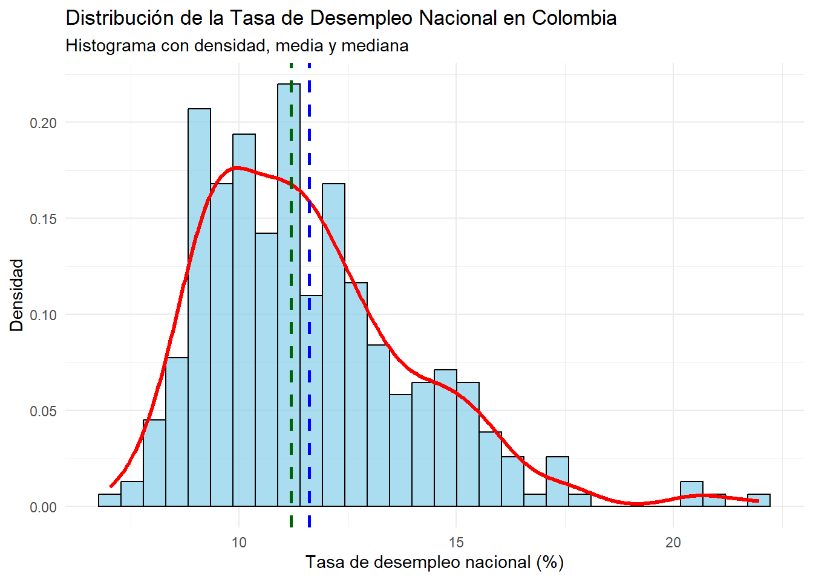
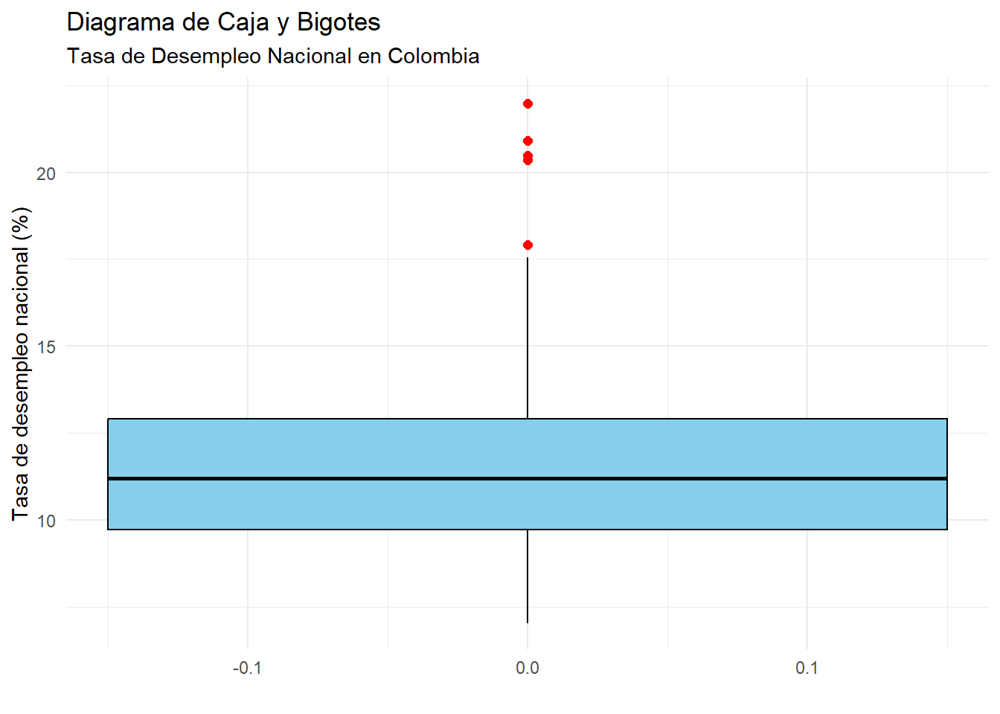
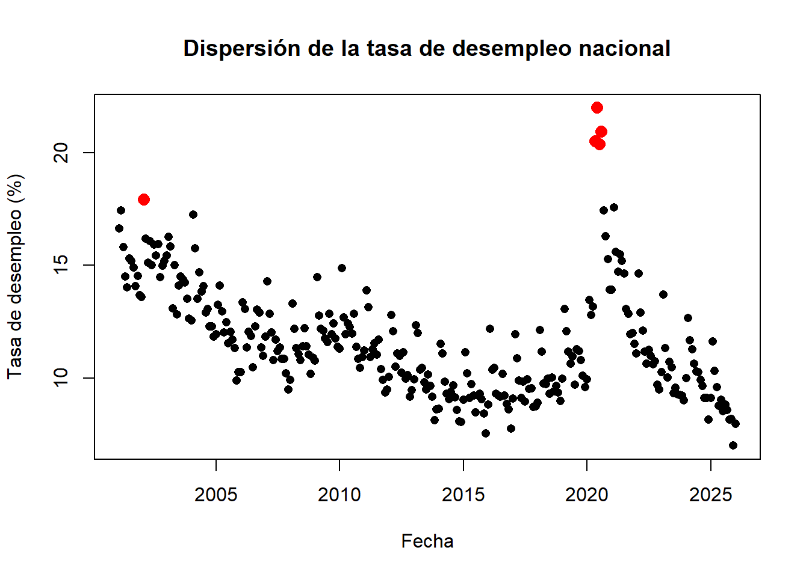

3 Analisis de la variable tasa_desempleo_nacional.
Consideremos el resumen de tasa_desempleo_nacional (objetivo):
MLC %>%
summarise(
n = length(tasa_desempleo_nacional),
media = mean(tasa_desempleo_nacional),
ds = sd(tasa_desempleo_nacional),
mediana = median(tasa_desempleo_nacional),
minimo = min(tasa_desempleo_nacional),
maximo = max(tasa_desempleo_nacional),
Q1 = quantile(tasa_desempleo_nacional, 0.25),
Q3 = quantile(tasa_desempleo_nacional, 0.75),
IQR = IQR(tasa_desempleo_nacional)
)## # A tibble: 1 × 9
## n media ds mediana minimo maximo Q1 Q3 IQR
## <int> <dbl> <dbl> <dbl> <dbl> <dbl> <dbl> <dbl> <dbl>
## 1 300 11.6 2.45 11.2 7.02 22.0 9.74 12.9 3.17La variable tasa_desempleo_nacional fue analizada a partir de 300 observaciones. Se obtuvo una media de 11.61247 que se refleja como la tasa de desempleo nacional que se refleja como porcentaje, donde la mitad de la muestra se encuentr por debajo de 11.19275. El minimo registrado fue de 7.02, lo que indica que en una fecha en especifico se presentó una tasa de desempleo menor a la media. Por su parte el maximo fue de 21.972, lo cual refleja una tasa de desempleo alta en una fecha en especifico.
- Con el fin de analizar la distribución de la variable tasa de desempleo nacional, se construye un histograma. Este grafico permite visualizar la concentración de los valores, identifica posibles asimetrías en la distribución, ayuda fundamentalmente para caracterizar la variable antes de estudiar sus relaciones con otros indicadores del mercado laboral.
library(ggplot2)
media_des <- mean(MLC$tasa_desempleo_nacional, na.rm = TRUE)
mediana_des <- median(MLC$tasa_desempleo_nacional, na.rm = TRUE)
ggplot(MLC, aes(x = tasa_desempleo_nacional)) +
geom_histogram(
aes(y = ..density..),
bins = 30,
fill = "skyblue",
color = "black",
alpha = 0.7
) +
geom_density(
color = "red",
linewidth = 1.2
) +
geom_vline(
xintercept = media_des,
color = "blue",
linetype = "dashed",
linewidth = 1
) +
geom_vline(
xintercept = mediana_des,
color = "darkgreen",
linetype = "dashed",
linewidth = 1
) +
labs(
title = "Distribución de la Tasa de Desempleo Nacional en Colombia",
subtitle = "Histograma con densidad, media y mediana",
x = "Tasa de desempleo nacional (%)",
y = "Densidad"
) +
theme_minimal()## Warning: The dot-dot notation (`..density..`) was deprecated in ggplot2 3.4.0.
## ℹ Please use `after_stat(density)` instead.
## This warning is displayed once per session.
## Call `lifecycle::last_lifecycle_warnings()` to see where this warning was
## generated.
El histograma presenta la distribución de frecuencias de la tasa de desempleo nacional. En el eje horizontal se ubican los intervalos de la variable (10, 15 y 20), mientras que el eje vertical muestra la frecuencia de observaciones en cada rango, con un máximo de 20.
La altura de las barras permite identificar la concentración de los datos. Si las frecuencias más altas se encuentran en los intervalos inferiores (cercanos a 10), predominan tasas de desempleo bajas. Por el contrario, si se concentran en valores superiores (cercanos a 20), predominan tasas altas. Este análisis visual facilita la comprensión del comportamiento del desempleo en el período estudiado y constituye una base descriptiva fundamental para estudios económicos y sociales.
- Para complementar el análisis del histograma, se construye un boxplot. Este tipo de visualización resume la distribución de la variable mediante sus cuantiles, analizar su dispersion de los datos a traves del rango intercuartílico y además facilita la detección de valores atípicos.- Realicemos un grafico de caja y bigote:
ggplot(MLC, aes(y = tasa_desempleo_nacional)) +
geom_boxplot(
fill = "skyblue",
color = "black",
width = 0.3,
outlier.color = "red",
outlier.size = 2
) +
labs(
title = "Diagrama de Caja y Bigotes",
subtitle = "Tasa de Desempleo Nacional en Colombia",
y = "Tasa de desempleo nacional (%)",
x = ""
) +
theme_minimal()
Se identifican tres puntos rojos fuera de este rango, lo que indica la presencia de valores atípicos o outliers: uno en el 20%, dos en el 15% y uno en el 10%. Estos valores se desvían del comportamiento general de la serie, posiblemente reflejando periodos con condiciones económicas excepcionales, como crisis o recuperaciones atípicas. Se reflejan unos outliers, pero al ser el dataset economico se mantendrá por ahora.
- Una vez analizada la distribución de las variables mediante histogramas y detectados posibles valores atípicos con boxplot, se emplea el gráfico de dispersión con el fin de visualizar cada observación individualmente. Este tipo de gráfico permite confirmar la presencia de outliers, identificar patrones en los datos y complementar el análisis exploratorio previo.
Q1 <- quantile(MLC$tasa_desempleo_nacional, 0.25, na.rm = TRUE)
Q3 <- quantile(MLC$tasa_desempleo_nacional, 0.75, na.rm = TRUE)
IQR_val <- IQR(MLC$tasa_desempleo_nacional, na.rm = TRUE)
lim_inf <- Q1 - 1.5 * IQR_val
lim_sup <- Q3 + 1.5 * IQR_val
outliers <- MLC$tasa_desempleo_nacional < lim_inf | MLC$tasa_desempleo_nacional > lim_sup
plot(MLC$fecha, MLC$tasa_desempleo_nacional,
main = "Dispersión de la tasa de desempleo nacional",
xlab = "Fecha",
ylab = "Tasa de desempleo (%)",
pch = 16)
points(MLC$fecha[outliers],
MLC$tasa_desempleo_nacional[outliers],
col = "red",
pch = 16,
cex = 1.4)
El gráfico de dispersión muestra la evolución temporal de la tasa de desempleo nacional entre 2001 y 2025. La mayoría de los valores se concentran entre 8% y 14%, lo que indica un comportamiento relativamente estable durante gran parte del período.
No obstante, se identifican valores atípicos, especialmente alrededor del año 2020, donde el desempleo supera el 20%, reflejando un choque significativo en el mercado laboral asociado al impacto económico de la pandemia de COVID-19. Estos puntos no representan errores en los datos, sino eventos económicos extraordinarios que afectaron temporalmente la dinámica del empleo en el país.